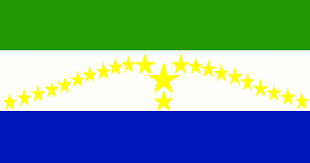

-Nombre del departamento: Morazan
Año de fundacion: Hace 144 años, entre julio y agosto de 1875, se definió la fundación del departamento de Morazán
-Bandera del departamento:
-Nombre del departamento: San miguel
Año de fundacion: San Miguel fue fundada el 8 de mayo de 1530
-Bandera del departamento:
-Nombre del departamento: Usulután
Año de fundacion: 22 de junio de 1865
-Bandera del departamento:

-Nombre del departamento: La unión
Año de fundacion: Descubierto por Andrés Niño: 1522 Título de ciudad:
28 de febrero de 1854 (169 años) Cabecera departamental:
22 de junio de 1865 (157 años)
-Bandera del departamento:
-Nombre del departamento: La Paz
-Año de fundacion: El 21 de febrero de 1852 se fundó el departamento de La Paz
-Bandera del departamento:
-Nombre del departamento: Cabañas
-Año de fundacion: 10 de febrero de 1873
-Bandera del departamento:
-Nombre del departamento: San Vicente
-Año de fundacion: Fue fundada en el año 1635
-Bandera del departamento:
-Nombre del departamento: La Libertad
-Año de fundacion: Fue fundada el 28 de enero de 1865
-Bandera del departamento:
-Nombre del departamento: Chalatenango
-Año de fundacion: El 14 de febrero de 1855
-Bandera del departamento:
-Nombre del departamento: San Salvador
-Año de fundacion: 15 de septiembre de 1821
-Bandera del departamento:
-Nombre del departamento: Cuscatlán
-Año de fundacion: 1835
-Bandera del departamento:
-Nombre del departamento: Ahuachapán
-Año de fundacion: 9 de febrero de 1869
-Bandera del departamento:
-Nombre del departamento: Santa Ana
-Año de fundacion: La ciudad fue fundada alrededor del siglo v o vi, por los mayas
-Bandera del departamento:
-Nombre del departamento: Sonsonate
-Año de fundacion: La ciudad de Sonsonate, fundada por Antonio Domínguez en 1552, es su cabecera.
-Bandera del departamento: